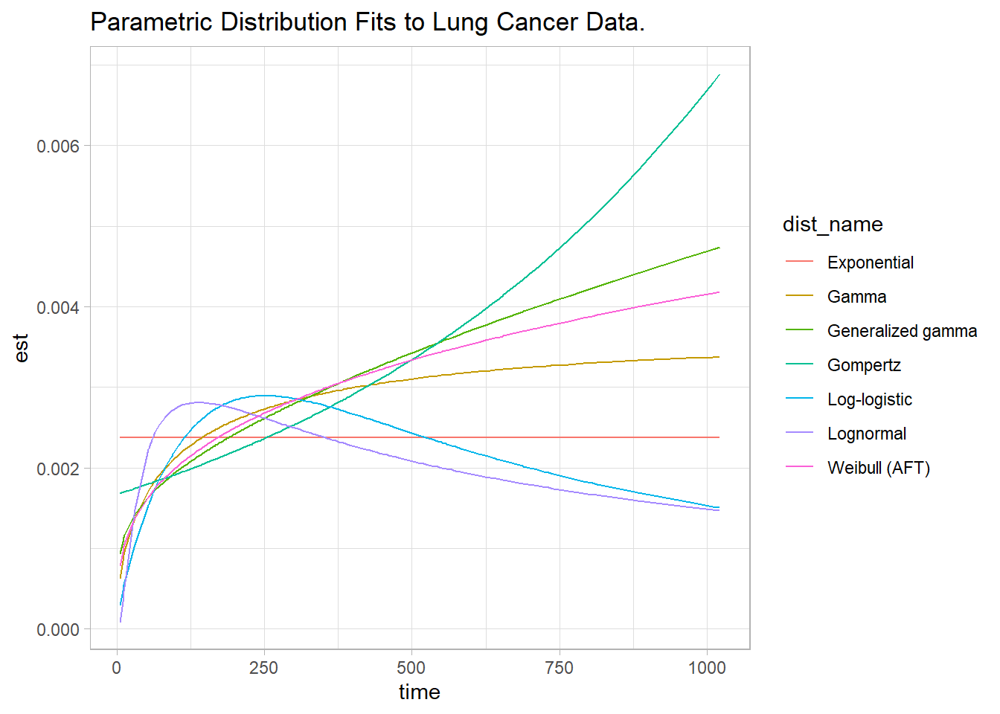

Distribution | Hazard Shape |
|---|---|
Exponential | Constant |
Weibull (AFT) | Monotonically Increasing/Decreasing |
Log-normal | Arc-shaped and Monotonically Decreasing |
3 Parametric
The KM curve with logrank test is a univariate analyses describing the effect of a single categorical factor variable on survival. Parametric models, on the other hand, are able to describe the effect of multiple covariates. Fully-parametric models are less common than the semi-parametric Cox model (Chapter 4) because they are less flexible, but if the process follows the parametric distribution these models are preferable because they estimate fewer parameters, allow you to extrapolate beyond the range of the data, and produce a more meaningful interpretation of the underlying mechanism in the model (The Analysis Factor, Zhang (2016)).
Devin Incerti and Tavish Srivastava review parametric distributions commonly used in survival analyses. Table 3.1 below is a selected list of distributions that are reviewed in both articles and are included in the survival package. Not included below, but available in survival or flexsurv are the Gompertz, Gamma, log-logistic, and generalized gamma.
Choose the distribution that best matches your a priori beliefs about the hazard function or choose the one with the lowest AIC (The Analysis Factor).
3.1 Exponential
The exponential distribution (probability notes), \(T \sim \mathrm{Exp}(\lambda)\), is the easiest to use because its hazard function is time-independent. @ref(fig:fig03-exp) shows a constant hazard function at two rates, \(\lambda \in [1, 3]\), per unit of time.
expand.grid(
t = seq(0.1, 10, .1),
loc = c(1, 3)
) %>%
mutate(
`F (CDF)` = pexp(t, rate = loc),
`f (PDF)` = dexp(t, rate = loc),
S = 1 - `F (CDF)`,
`h = f / S` = flexsurv::hexp(t, rate = loc),
loc = paste("rate:", loc)
) %>%
plot_dist()\[\begin{eqnarray} \log h(t) &=& \alpha + \beta X \\ h(t) &=& e^{\left(\alpha + \beta X \right)} \\ &=& \lambda \end{eqnarray}\]
Interpret \(\alpha\) as the baseline log-hazard because when \(X\) is zero \(h(t) = e^\alpha\). The cumulative hazard is \(H(t) = \int_0^t \lambda dt = \lambda t\) and the corresponding survival function is
\[S(t) = e^{-H(t)} = e^{-\lambda t}.\]
The expected survival time is \(E(T) = \int_0^\infty S(t)dt = \int_0^\infty e^{-\lambda t} dt = 1 / \lambda.\) The median survival time is \(S(t) = e^{-\lambda t} = 0.5\), or \(t_{med} = \log(2) / \lambda\).
The survival curve is fit using maximimum likelihood estimation (MLE). My statistics notes explain MLE for the exponential distribution. Survival curve MLE is a little more complicated because of censoring. The likelihood \(L\) that \(\lambda\) produces the observed outcomes is the product of the probability densities for each observation because they are a sequence of independent variables. Let \(\delta_i = [1, 0]\) for unsensored and censored observations.
\[ L(\lambda; t_1, t_2, \dots, t_n) = \Pi_{i=1}^n f(t_i; \lambda)^{\delta_i} S(t_i; \lambda)^{1-\delta_i} \]
Substituting \(f(t) = h(t) S(t)\), and then substituting \(h(t) = \lambda\) and \(S(t) = e^{-\lambda t}\) and simplifying,
\[\begin{eqnarray} L(\lambda; t_1, t_2, \dots, t_n) &=& \Pi_{i=1}^n h(t_i; \lambda)^{\delta_i} S(t_i; \lambda) \\ &=& \Pi_{i=1}^n \lambda^{\delta_1} e^{-\lambda t_i} \\ &=& \lambda^{\sum \delta_i} \exp \left(-\lambda \sum_{i=1}^n t_i \right) \end{eqnarray}\]
Simplify the notation by letting \(d = \sum \delta_i\), the total number of events (or deaths or whatever), and \(V = \sum t_i\), the number of person-years (or days or whatever).
\[L(\lambda; t_1, t_2, \dots, t_n) = \lambda^d e^{-\lambda V}\]
This form is difficult to optimize, but the log of it is simple.
\[l(\lambda; t_1, t_2, \dots, t_n) = d \log(\lambda) - \lambda V\]
Maximize the log-likelihood equation by setting its derivative to zero and solving for \(\lambda\).
\[\begin{eqnarray} \frac{d}{d \lambda} l(\lambda; t_1, t_2, \dots, t_n) &=& \frac{d}{d \lambda} \left(d \log(\lambda) - \lambda V \right) \\ 0 &=& \frac{d}{\lambda} - V \\ \lambda &=& \frac{d}{V} \end{eqnarray}\]
\(\lambda\) is the reciprocal of the sample mean, person-years divided by failures.
The second derivative, \(-\frac{d}{\lambda^2}\), is approximately the negative of the variance of \(\lambda\).
\[V(\lambda) = d / V^2\]
3.2 Weibull
Although the exponential function is convenient, the Weibull distribution is more appropriate for modeling lifetimes.
expand.grid(
t = seq(0.1, 10, .1),
loc = c(.5, 1, 1.5, 2)
) %>%
mutate(
`F (CDF)` = pweibull(t, shape = loc, scale = 2),
`f (PDF)` = dweibull(t, shape = loc, scale = 2),
S = 1 - `F (CDF)`,
`h = f / S` = flexsurv::hweibull(t, shape = loc, scale = 2),
loc = paste("shape:", loc)
) %>%
plot_dist()Its hazard function is
\[\begin{eqnarray} h(t) &=& \alpha \lambda (\lambda t)^{\alpha - 1} \\ &=& \alpha \lambda^\alpha t^{\alpha-1} \end{eqnarray}\]
The cumulative hazard function is \(H(t) = (\lambda t)^\alpha\) and the corresponding survival function is
\[S(t) = e^{-(\lambda t)^\alpha}.\]
The exponential distribution is a special case of the Weibull where \(\alpha = 1\). The expected survival time is \(E(t) = \frac{\Gamma (1 + 1 / \alpha)}{\lambda}\). The median survival time is \(t_{med} = \frac{[\log(2)]^{1 / \alpha}}{\lambda}\).
To measure the effects of covariates, it is preferable to substitute \(\sigma = 1 / \alpha\) and \(\mu = -\log \lambda\) so
\[ h(t) = \frac{1}{\sigma} e^{-\frac{\mu}{\sigma}} t^{\frac{1}{\sigma} - 1} \]
and
\[ S(t) = e^{-e^{-\mu/\sigma}t^{1/\sigma}} \]
3.3 Log-normal
expand.grid(
t = seq(0.1, 10, .1),
loc = c(.5, 1, 1.5, 2)
) %>%
mutate(
`F (CDF)` = plnorm(t, meanlog = loc),
`f (PDF)` = dlnorm(t, meanlog = loc),
S = 1 - `F (CDF)`,
`h = f / S` = flexsurv::hlnorm(t, meanlog = loc),
loc = paste("Mean Log:", loc)
) %>%
plot_dist()3.4 Distribution Selection
Use the flexsurv package to model parametric distributions. This section demonstrates how to choose the distribution with the lung cancer data set from the survival package. lung records the status (1 censored, 2 dead) of 228 patients with advanced lung cancer. There are several covariates in the data set, but for this illustration we’ll include just ph.ecog, the patient’s level of functioning (0 = good, 5 = dead) and treat it as a factor variable.
df_lung <- survival::lung %>%
mutate(ph.ecog = factor(ph.ecog)) %>%
select(time, status, ph.ecog)
head(df_lung) time status ph.ecog
1 306 2 1
2 455 2 0
3 1010 1 0
4 210 2 1
5 883 2 0
6 1022 1 1Figure @ref(fig:fig03-1) is the Kaplan-Meier cumulative hazard function estimate. The cumulative hazard rises more sharply at around time 500 then changes inflection again around time 700.
km_fit <- survfit(Surv(time, status) ~ 1, data = df_lung)
ggsurvplot(
km_fit,
data = df_lung,
fun = "cumhaz",
pval.method = TRUE,
conf.int = TRUE,
ggtheme = theme_light(),
title = "Kaplan-Meier Cumulative Hazard Function Estimate"
)
Unfortunately, survminer::ggsurplot() does not plot the instantaneous hazard function. But the epR::epi.insthaz() does calculate instantaneous hazards. Figure @ref(fig:fig03-2) is the hazard function we want to approximate with a parametric distribution.
epiR::epi.insthaz(km_fit) %>%
ggplot(aes(x = time, y = hest)) +
geom_smooth(color = "red", method = "loess", formula = "y ~ x") +
theme_light() +
labs(title = "Kaplan-Meier Hazard Function Estimate",
x = "Time", y = "Instantaneous Hazard")Use the flexsurv packages to estimate parametric survival curves.
par_fits <- tibble(
dist_param = c("exp", "weibull", "gompertz", "gamma", "lognormal", "llogis",
"gengamma"),
dist_name = c("Exponential", "Weibull (AFT)", "Gompertz", "Gamma",
"Lognormal", "Log-logistic", "Generalized gamma")
) %>%
mutate(
fit = map(dist_param, ~flexsurvreg(Surv(time, status) ~ 1, data = df_lung, dist = .x)),
fit_smry = map(fit, ~summary(.x, type = "hazard", ci = FALSE, tidy = TRUE)),
AIC = map_dbl(fit, ~.x$AIC)
)Figure @ref(fig:fig03-3) shows the fitted curves. Which most closely resembles the KM hazard plot?
par_fits %>%
select(-c(dist_param, fit)) %>%
unnest(fit_smry) %>%
ggplot(aes(x = time, y = est, color = dist_name)) +
geom_line() +
theme_light() +
labs(title = "Parametric Distribution Fits to Lung Cancer Data.")
None of them seem great, but the bottom three curves (Exponential, Log-logistic, and Log-normal) seem especially poor choices. Using the AIC, best fit appears to be the Weibull model.
par_fits %>%
arrange(AIC) %>%
select(dist_name, AIC)# A tibble: 7 × 2
dist_name AIC
<chr> <dbl>
1 Weibull (AFT) 2312.
2 Generalized gamma 2313.
3 Gamma 2313.
4 Gompertz 2315.
5 Log-logistic 2326.
6 Exponential 2327.
7 Lognormal 2343.Use the Weibull (AFT) model then. What changes if you add ph.ecog to the model?
weibull_fit <- flexsurvreg(Surv(time, status) ~ ph.ecog, data = df_lung, dist = "weibull")
weibull_fitCall:
flexsurvreg(formula = Surv(time, status) ~ ph.ecog, data = df_lung,
dist = "weibull")
Estimates:
data mean est L95% U95% se exp(est)
shape NA 1.36104 1.20529 1.53692 0.08439 NA
scale NA 555.41821 437.97614 704.35204 67.31932 NA
ph.ecog1 0.49780 -0.26405 -0.55005 0.02196 0.14592 0.76794
ph.ecog2 0.22026 -0.66915 -0.99442 -0.34388 0.16596 0.51214
ph.ecog3 0.00441 -1.54904 -3.00855 -0.08952 0.74466 0.21245
L95% U95%
shape NA NA
scale NA NA
ph.ecog1 0.57692 1.02220
ph.ecog2 0.36994 0.70902
ph.ecog3 0.04936 0.91437
N = 227, Events: 164, Censored: 63
Total time at risk: 69522
Log-likelihood = -1138.334, df = 5
AIC = 2286.667`flexsurvreg() defaults to only modeling the relationship between the covariates and the location parameter of the distribution. You can test whether the covariates affect the shape too by specifying the relationship with the anc parameter.
weibull_fit_shape <- flexsurvreg(
Surv(time, status) ~ ph.ecog,
# anc = list(shape = ~ph.ecog),
data = df_lung, dist = "weibull")
weibull_fit_shapeCall:
flexsurvreg(formula = Surv(time, status) ~ ph.ecog, data = df_lung,
dist = "weibull")
Estimates:
data mean est L95% U95% se exp(est)
shape NA 1.36104 1.20529 1.53692 0.08439 NA
scale NA 555.41821 437.97614 704.35204 67.31932 NA
ph.ecog1 0.49780 -0.26405 -0.55005 0.02196 0.14592 0.76794
ph.ecog2 0.22026 -0.66915 -0.99442 -0.34388 0.16596 0.51214
ph.ecog3 0.00441 -1.54904 -3.00855 -0.08952 0.74466 0.21245
L95% U95%
shape NA NA
scale NA NA
ph.ecog1 0.57692 1.02220
ph.ecog2 0.36994 0.70902
ph.ecog3 0.04936 0.91437
N = 227, Events: 164, Censored: 63
Total time at risk: 69522
Log-likelihood = -1138.334, df = 5
AIC = 2286.667The 95% CIs for the shape estimators contain 0, so they do not belong in the model. Sticking with the original model, plot the effect of ECOG on survival.
summary(weibull_fit,
newdata = list(ph.ecog = levels(df_lung$ph.ecog)),
type = "hazard", tidy = TRUE) %>%
ggplot(aes(x = time)) +
geom_line(aes(y = est, col = ph.ecog)) +
theme_light() +
theme(legend.position = "bottom") +
labs(x = "Days", y = "Hazard", color = "ECOG Performance Score",
title = "Fitted Values Plot") The log of the negative log of \(S\), \(\log[-\log(S_i)] = \alpha \log(\lambda) + \alpha \log(t_i) = \frac{\mu}{\sigma} + \frac{1}{\sigma} \log(t_i)\) is a linear function, so you can use it to determine whether the Weibull function is appropriate for your analysis. Return to the lung data set introduced in Kaplan-Meier section. Use the Kaplan-Meier estimate of the survival distribution to extract the survival estimates and each time, transform them to conform to the above equation, and fit a linear model.
km_fit_1 <- survfit(Surv(time, status) ~ 1, data = lung)
log_log_s <- log(-log(km_fit_1$surv))
log_t <- log(km_fit_1$time)
km_fit_1_lm <- lm(log_log_s ~ log_t)
km_fit_1_lm %>%
broom::augment() %>%
ggplot(aes(x = log_t)) +
geom_point(aes(y = log_log_s)) +
geom_line(aes(y = .fitted), linetype = 2, color = "goldenrod") +
theme_light()This is a decent fit. The coefficient estimates are
coef(km_fit_1_lm)(Intercept) log_t
-7.402713 1.223005 so \(\mu = -\frac{-7.403}{1.223} = -6.053\) and \(\sigma = \frac{1}{1.223} = {0.818}\).
Compare two Weibull distributions using the accelerated failure time (AFT) model. This model assumes the survival time for the treatment group is a multiple, \(e^\gamma\), of the control group survival time. The survival distributions in the AFT model are related as \(S_1(t) = S_0(e^{-\gamma}t)\) and the hazards are related by \(h_1(t) = e^{-\gamma}h_0(e^{-\gamma}t)\). In the case of the Weibull distribution, the relationship is \(h_1(t) = e^{-\frac{\gamma}{\sigma}}h_0(t)\). Fit a Weibull model with survreg() (recall KM is fit with survfit()). Return to the original model using the lung data set to compare survival between males and females.
dat <- lung %>% mutate(sex = factor(sex, levels = c(1, 2), labels = c("Male", "Female")))
wb_fit <- survreg(Surv(time, status) ~ sex, data = dat, dist = "weibull")
summary(wb_fit)
Call:
survreg(formula = Surv(time, status) ~ sex, data = dat, dist = "weibull")
Value Std. Error z p
(Intercept) 5.8842 0.0720 81.76 < 2e-16
sexFemale 0.3956 0.1276 3.10 0.0019
Log(scale) -0.2809 0.0619 -4.54 5.7e-06
Scale= 0.755
Weibull distribution
Loglik(model)= -1148.7 Loglik(intercept only)= -1153.9
Chisq= 10.4 on 1 degrees of freedom, p= 0.0013
Number of Newton-Raphson Iterations: 5
n= 228 \(\hat{\gamma} = 0.3956\), meaning females have longer times until death by a factor of \(e^{\hat{\gamma}} = e^{0.3956} = 1.49\). The scale parameter estimate is \(\hat\sigma = 0.755\), so the log proportional hazards is \(\hat\beta = -\frac{\hat\gamma}{\hat\sigma} = \frac{0.3956}{0.755} = 0.524\).
The survival curve estimate is \(\hat{S}(t) = e^{-e^{-\hat\mu/\hat\sigma}t^{1/\hat\sigma}}\), but \(\hat\alpha = 1 / \hat\sigma\).
new_dat <- expand.grid(
sex = levels(dat$sex),
survival = seq(.01, .99, by = .01)
) %>%
mutate(
pred = map2(sex, survival,
~predict(wb_fit, type = "quantile", p = 1 - .y, se = TRUE,
newdata = data.frame(sex = .x))),
t = map_dbl(pred, ~pluck(.x, "fit")),
se = map_dbl(pred, ~pluck(.x, "se.fit")),
ucl = t + 1.96 * se,
lcl = t - 1.96 * se
)
palette_sex <- c("#E7B800", "#2E9FDF")
names(palette_sex) <- c("Male", "Female")
new_dat %>%
ggplot(aes(y = survival)) +
geom_line(aes(x = t, color = sex)) +
geom_ribbon(aes(xmin = lcl, xmax = ucl, fill = sex), alpha = 0.2) +
scale_color_manual(values = palette_sex) +
scale_fill_manual(values = palette_sex) +
theme_light()Use predict() to get survival expectations.
# 90% of subjects fail by time
wb_fit %>% predict(type = "quantile", p = .9, newdata = data.frame(sex = levels(dat$sex)))
## 1 2
## 674.4717 1001.7539# Median survival times
predict(wb_fit, type = "quantile", p = 1 - 0.5, newdata = data.frame(sex = levels(dat$sex))) 1 2
272.4383 404.6370 You can fit other models with the dist = c("lognormal", "exponential") parameter.